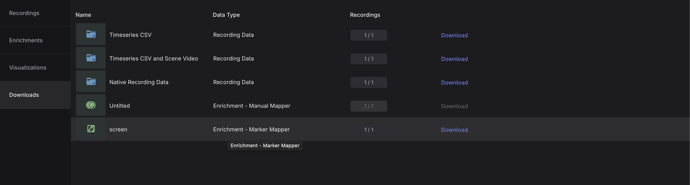
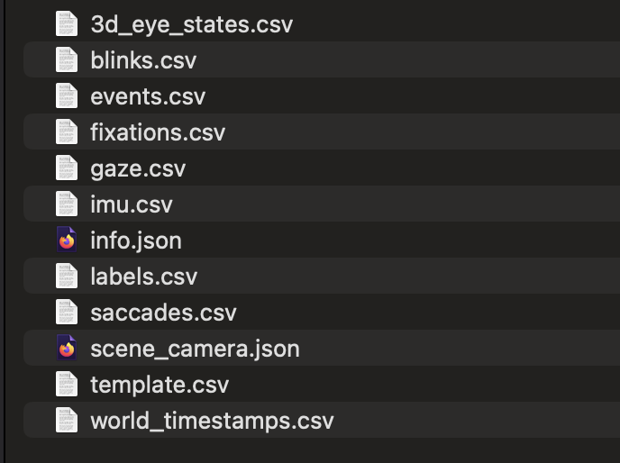
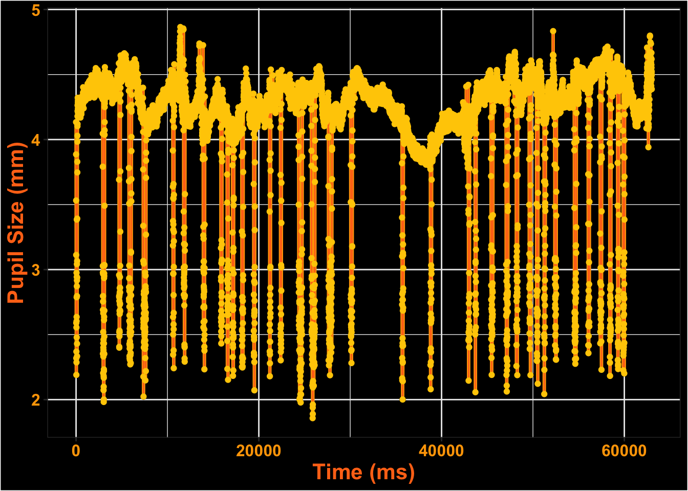
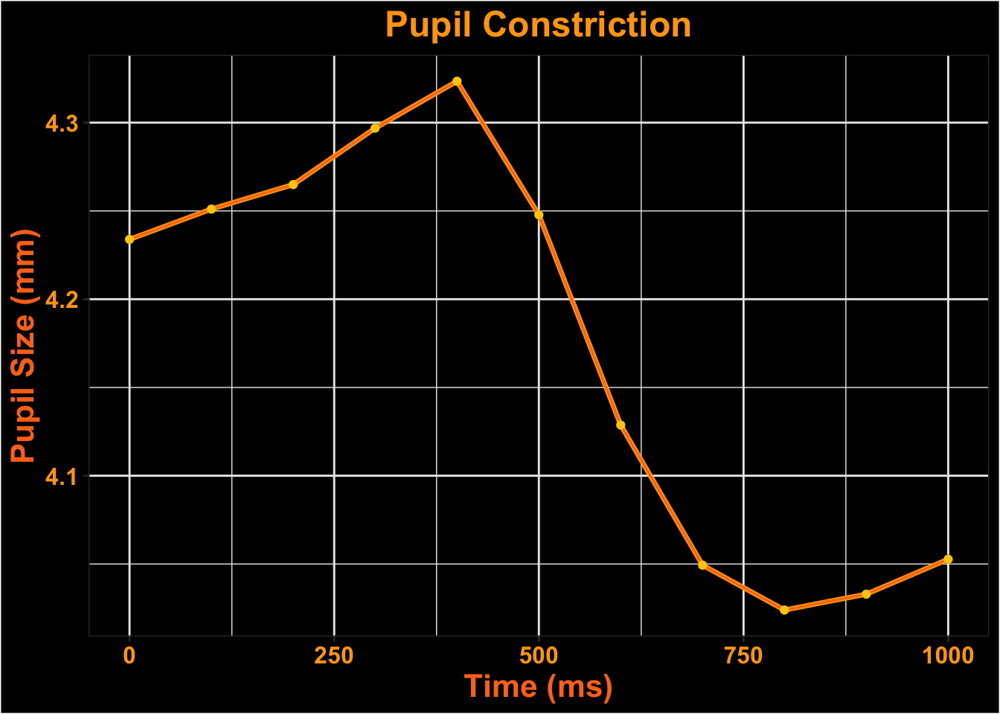
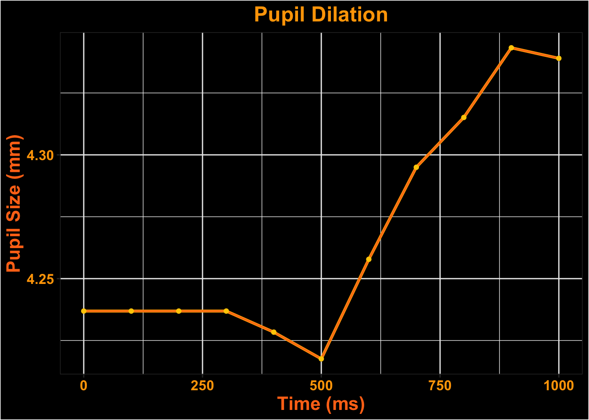

Analzying Pupil Labs Neon Data With GazeR
🎃 Happy Halloween, goils and boils! 👻
I have a spooktacular blog post for you today—one that dives into the mysterious world of pupil data from Pupil Labs Neon glasses. We’re currently using the Neon in the classroom to study mind-wandering and attention. However, these mobile eye trackers aren’t just for field studies—they shine in the lab, too.
To demonstrate this, I created a simple PsychoPy experiment that interfaces seamlessly with the Neon (you can find it here: https://osf.io/txz59/overview ) In the task, participants view a bright sun for 30 seconds followed by a dark patch for another 30 seconds. The pupil responds to basic visual features like brightness, constricting in light and dilating in the dark.

In this post, I’ll show how the Neon glasses can capture these pupillary dynamics and how you can use my R package {gazeR} to preprocess the pupil data collected from Pupil Labs devices.
gazeR Pupil labs Functions
Once you collect data with Pupil Labs Neon, your recordings live in Pupil Cloud. Export the Time Series for each recording (CSV export). After the export finishes, you’ll have a folder per participant/recording containing multiple CSVs.

When this is finished downloading it will have a folder for each recording/participant with a series of files.
From each participant folder, we use exactly three files:
-
gaze.csv— gaze samples (timestamps, x/y pixels, fixations, blinks)3d_eye_states.csv— pupil diameters (left/right, in mm)events.csv— experiment events/messages (e.g., trial markers)

I created two new functions to read in this data from Pupil Labs. The first function is parse_pl() and the second one is process_all_subjects_PL(). Both work in tandem to read in data from Pupil Labs.
What the functions do
parse_pl(subject_dir, start_mode = c("any","exact"), start_messages = NULL, max_event_lag_ms = 20)
Processes one participant:
Reads the three CSVs and converts timestamps to milliseconds.
Joins pupil data to gaze samples.
Aligns each non-recording event (
events.csv) to the nearest gaze row (withinmax_event_lag_ms).Creates trial indices
start_mode = "any": any non-empty message (excludingrecording.begin/.end) starts a new trial.start_mode = "exact": only messages listed instart_messagesstart a new trial (robust to case/whitespace/hyphens vs underscores).Removes blank trials (trials that have no valid start message).
Resets time to 0 at the first row of each trial
Returns a tidy tibble ready for
{gazeR}:subject, trial, time, x, y, pupil, blink, message.
process_all_subjects_PL(root_dir, output_dir = file.path(root_dir, "processed"), ...)
Batch-processes all immediate subfolders of root_dir using parse_pl(), writes one CSV per subject plus a combined files
-
Per-subject files:
{output_dir}/{SUBJECT}_processed.csCombined file:
{output_dir}/all_subjects_processed.csv
Any additional arguments (...) are passed straight to parse_pl() (e.g., start_mode, start_messages, max_event_lag_ms).
Example Dataset
Let’s read in the dataset created from the above functions.
We will load in {gazeR} and needed libraries.
subject trial time x y pupil blink
1 2025-10-31_12-48-26-74964918 1 0.000000 813.938 606.636 4.24975 FALSE
2 2025-10-31_12-48-26-74964918 1 5.005127 815.400 608.674 4.21485 FALSE
3 2025-10-31_12-48-26-74964918 1 9.994873 815.163 607.715 4.23690 FALSE
4 2025-10-31_12-48-26-74964918 1 14.994629 814.249 606.579 4.25715 FALSE
5 2025-10-31_12-48-26-74964918 1 19.994629 812.541 607.620 4.22035 FALSE
6 2025-10-31_12-48-26-74964918 1 24.994873 815.149 607.083 4.20380 FALSE
message
1 trial-started-light
2
3
4
5
6 Let’s take a look at the data we have.

This is what the pupil data looks like for the entire time course.
Extending Blinks
We see dips in the pupil signal–these are most likely from blinks. Pupil Labs has their own blink algorithm and we will use that. We first turn pupil sizes where there is a blink to NA. Then we use the extend_blinks() function to extending blinks 100 ms forward and backward in time.
Interpolate blinks
Here let’s linearly interpolate the blinks and then smooth the data using a 5-point moving average.
# Smooth and Interpolate
smooth_interp <- smooth_interpolate_pupil(pup_extend, pupil="pupil", extendpupil="extendpupil", extendblinks=TRUE, step.first="smooth", maxgap=Inf, type="linear", hz=200, n=5)Let’s see how much missing data there is and remove trials with greater than 50% missing data.
pup_missing<-count_missing_pupil(smooth_interp, missingthresh = .5)Unlikely Pupil Sizes
Now let’s keep pupil diameter sizes between 2 mm and 9 mm
pup_outliers<-pup_missing |>
dplyr::filter (pup_interp >= 2, pup_interp <= 9)MAD
Get rid of artifacts we might have missed during some earlier steps.
Onset
Let’s only look from the start of the trial until 1000 ms
Downsample
Downsample the time-course to 50 ms.
#downsample
timebins1<- downsample_gaze(pupil_onset, bin.length=100, pupil="pup_interp", timevar = "time", aggvars = c("subject", "trial", "timebins"), type="pupil")
kable(head(timebins1))| subject | trial | timebins | aggbaseline |
|---|---|---|---|
| 2025-10-31_12-48-26-74964918 | 1 | 0 | 4.233871 |
| 2025-10-31_12-48-26-74964918 | 1 | 100 | 4.251030 |
| 2025-10-31_12-48-26-74964918 | 1 | 200 | 4.264931 |
| 2025-10-31_12-48-26-74964918 | 1 | 300 | 4.296879 |
| 2025-10-31_12-48-26-74964918 | 1 | 400 | 4.323454 |
| 2025-10-31_12-48-26-74964918 | 1 | 500 | 4.247790 |
Visualize Time-course

